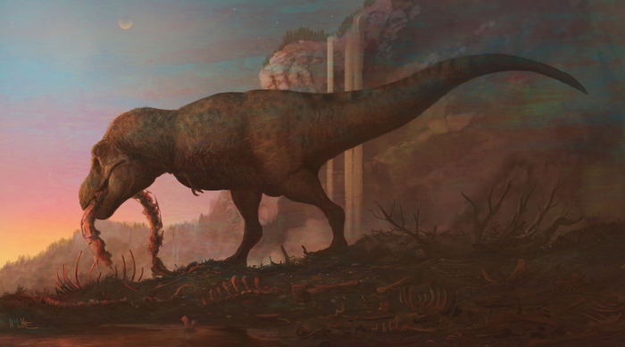
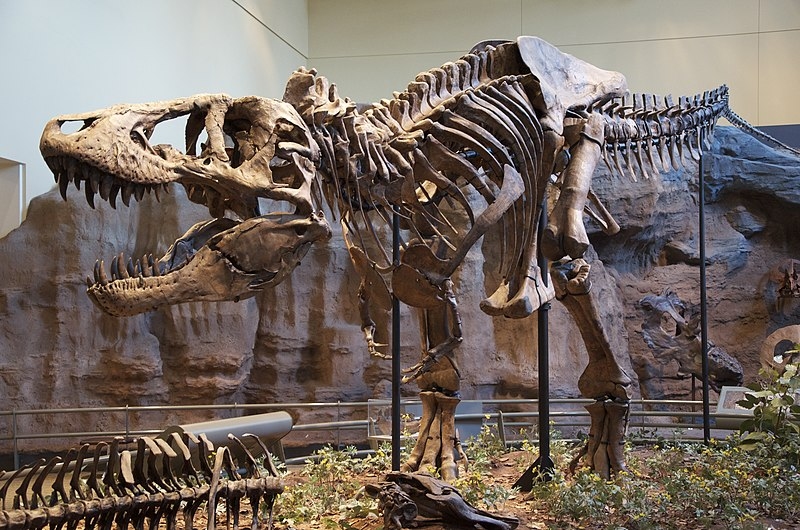

Tyrannosaurus Rex
Tyrannosaurus rex is a species of carnivorous, bipedal dinosaur from the Late Cretaceous period. It is recognized by its massive skull, powerful jaw, and robust teeth designed for tearing flesh. Fossils of this species have been predominantly found in North America, specifically in areas that were part of the island continent known as Laramidia. They are discovered in sediments dated to the Maastrichtian age of the upper Cretaceous Period, approximately 68 to 66 mya.
Mark Witton, eurekalert.org
Tyrannosaurus rex, one of the most iconic dinosaurs, was first discovered by Barnum Brown in 1900 in eastern Wyoming. The fossil, a partial skeleton lacking the skull, was collected from Hell Creek Formation. Brown collected another specimen, a nearly complete skeleton with a skull, in 1902, which was later sold to the Carnegie Museum of Natural History in Pittsburgh. These early finds contributed significantly to our understanding of these 'tyrant lizards' and sparked a public fascination with this formidable predator that continues to this day.
Public Domain, commons.wikimedia.org